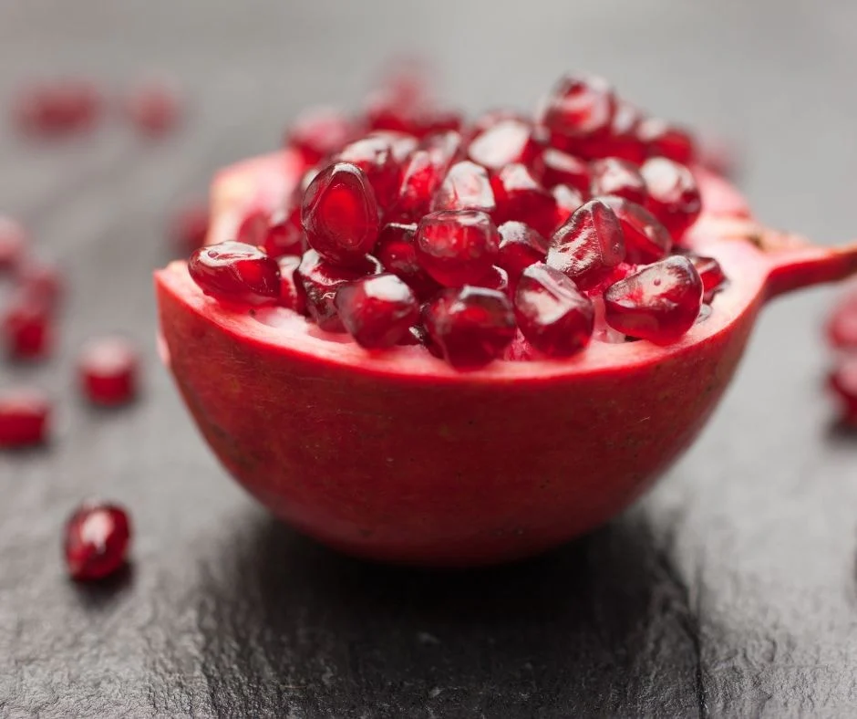

农商赵海军的商品展示

现摘红肉软籽石榴
价格: ¥80/kg

新制石榴果酱
价格: ¥30/瓶（250ml）
相关政策提要
热门时政1
坚持以市场为导向，以营销为主导，以品牌为统领，以活动为载体，广泛动员可依靠力量，集聚资源扩大宣传，加大产销有效对接，拓宽数字营销渠道，着力将淅川县农产品打造成为国内第一、世界知名的高品质、国际范的农业“金字招牌”。淅川县始终牢记总书记的殷殷嘱托，以实施“双九战略”为统领，聚焦“守底线、抓发展、促振兴”，务实推进巩固拓展脱贫攻坚成果、乡村产业发展、乡村建设和乡村治理工作，高效推动乡村振兴开新局、上台阶，不断增强人民群众获得感、幸福感。
闽海之门，英雄之城。厦门市作为福建省的副省级城市，国务院批复确定的中国经济特区和东南沿海重要的中心城市、港口及风景旅游城市；西接漳州，北邻泉州，东南与大小金门和大担岛隔海相望，是闽南地区的主要城市，与漳州、泉州并称厦漳泉闽南金三角经济区。本次活动在厦门市河南商会的支持下， 以“凝聚乡情、携手互助、发展共赢、增彩淅川”为宗旨。逐步通过厦门副省级城市的优势，和厦门河南商会的商会优势，加快推动淅川农产品在闽南金三角市场的知名度，让消费者更加喜爱淅川味道。推介淅川产业经济的发展，共促淅川林果行业的产销对接及信息交流与合作。
淅川县商务局将于2024年11月26日在厦门希尔顿逸林酒店星月宴会厅举办淅川县特色农产品（厦门）产销对接活动。
热门时政2
通过本次推荐会赢得顾客的口碑，促进优质农产品的销售。
逐步通过厦门副省级城市的优势，和厦门河南商会的商会优势，加快推动淅川农产品在闽南金三角市场的知名度，让消费者更加喜爱淅川味道。